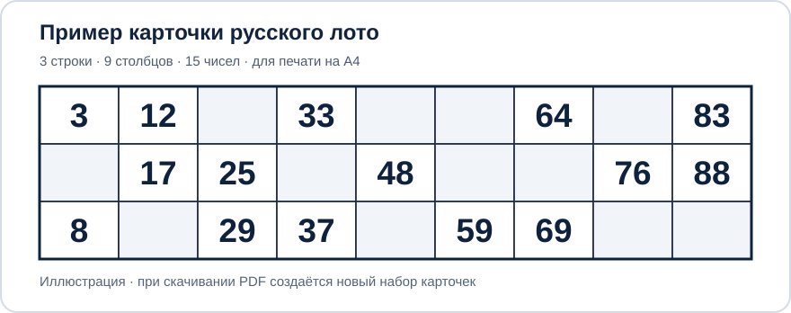

Отдельная версия с проверкой каждого набора. В одном PDF все карточки разные, а числа распределяются максимально ровно: в каждой шестёрке карточек все числа от 1 до 90 встречаются ровно по одному разу. Настраивайте печать на А4 и скачивайте бесплатно, без регистрации.
Готов к созданию набора без одинаковых карточек.

Карточки формируются группами по шесть. В каждой такой группе все 90 чисел встречаются ровно один раз, без повторов между карточками группы. Поэтому при создании полного набора из 6, 12, 18 и так далее карточек каждый номер от 1 до 90 используется одинаковое количество раз. Для неполной последней шестёрки отличие в частоте номеров не превышает одного раза.
Каждая карточка содержит 3 строки и 9 столбцов, по 5 разных чисел в каждой строке; числа идут по положенным диапазонам и сверху вниз возрастают в столбце. При записи PDF все одинаковые карточки внутри файла исключаются.
В пределах одного скачиваемого PDF карточки не повторяются, а распределение чисел 1–90 проверено. Если контроль не проходит, программа сообщает об ошибке вместо выдачи некорректного PDF.
Да, если карточек больше шести. Каждая шестёрка использует все 90 чисел один раз, но между шестёрками числа повторяются — это нормально. Полностью одинаковых карточек в рамках одного PDF не будет.
Созданный PDF нужно сохранить: точное воспроизведение прошлого набора через повторный запуск не предусмотрено. Проверка уникальности распространяется на текущий PDF, а не на все файлы, созданные ранее.
В обычной версии комбинации выбираются случайно без общего контроля дубликатов. Здесь используется генерация сбалансированными шестёрками, проверка правильности сетки, отсутствие повторяющихся карточек в одном PDF и ограничение объёма, защищающее от слишком тяжёлой генерации. Вернуться к обычному генератору.
Если генератор карточек для Русского лото оказался полезным, вы можете по желанию поддержать его развитие.
Важно: Донаты — это добровольные пожертвования. Они не открывают никакого дополнительного функционала и не дают преимуществ. Весь функционал доступен сразу всем полностью бесплатно, независимо от пожертвований.
Здесь можно написать отзыв, рассказать об ошибке или предложить улучшение.
Без регистрации и аккаунта GitHub. Имя можно не указывать.
Отзывы общедоступны и хранятся у стороннего сервиса HTML Comment Box. Не размещайте пароли, контакты и другие личные данные.